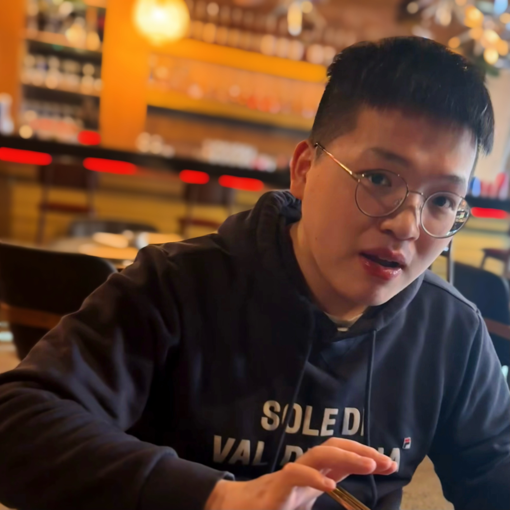

Weiqin Chen
|  |
Weiqin Chen Ph.D. CandidateDepartment of Electrical, Computer, and Systems Engineering School of Engineering Rensselaer Polytechnic Institute Office: Jonsson Engineering Center Address: 110 8th Street, Troy, New York, 12180 E-mail: chenw18@rpi.edu; weiqin.chen7@gmail.com |
About me
I am a 4th-year PhD Candidate at Rensselaer Polytechnic Institute under the supervision of Prof. Santiago Paternain.
My current research interests lie at Reinforcement Learning, Optimization, Foundation Model, Control.
Recent news
Jan. 2025: One paper has been accepted by ICLR 2025.
Strategist: Learning Strategic Skills by LLMs via Bi-Level Tree SearchDec. 2024: Two papers have been accepted by AAAI 2025 workshops at GenPlan and AI+ORMS.
A General Control-Theoretic Approach for Reinforcement Learning: Theory and Algorithms (Oral)
Random Policy Enables In-Context Reinforcement Learning within Trust Horizons (Spotlight)Oct. 2024: One paper has been accepted by NeurIPS 2024 workshop at LanGame.
PIANIST: Learning Partially Observable World Models with LLMs for Multi-Agent Decision MakingJun. 2024: One paper has been accepted by ICML 2024 workshop at AutoRL.
Apr. 2024: I am pleased to share that I have passed the Doctoral Candidacy Examination, under the supervision of Prof. Santiago Paternain, Prof. Tianyi Chen, Prof. Koushik Kar, and Dr. Dharmashankar Subramanian.
Apr. 2024: One paper has been accepted by L4DC 2024.
Generalized Constraint for Probabilistic Safe Reinforcement LearningMar. 2024: One paper has been accepted by IEEE Transactions on Automatic Control.
Probabilistic Constraint for Safety-Critical Reinforcement LearningDec. 2023: I am honored to receive the 2023 Belsky Award for Computational Sciences and Engineering.
Dec. 2023: One paper has been accepted by AAMAS 2024.
Adaptive Primal-Dual Method for Safe Reinforcement Learning (Oral)May - Aug. 2023: I enjoyed the amazing internship at IBM Research (Thomas J. Watson Research Center).
Jan. 2023: One paper has been accepted by CISS 2023.
Policy Gradients for Probabilistic Constrained Reinforcement Learning (Oral)Nov. 2022: I am pleased to share that I have passed the Doctoral Qualifying Examination.
Sept. 2021: I joined Rensselaer Polytechnic Institute to pursue a Ph.D. degree of Electrical Engineering.